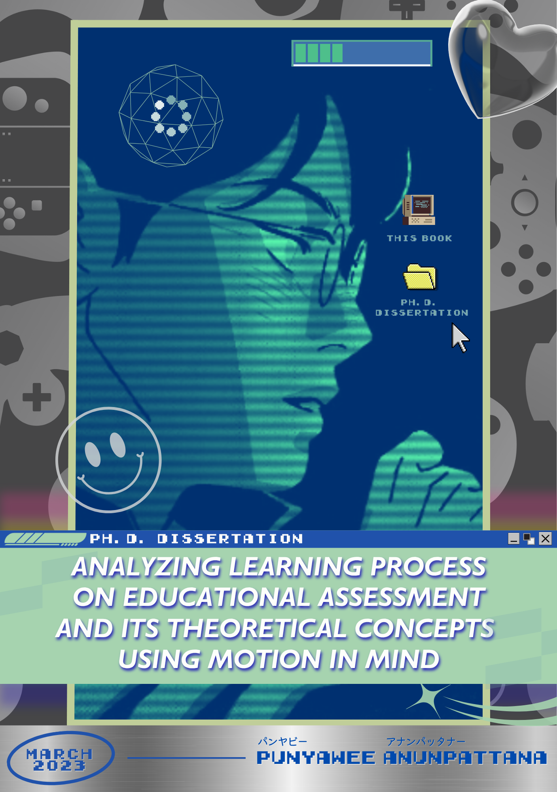
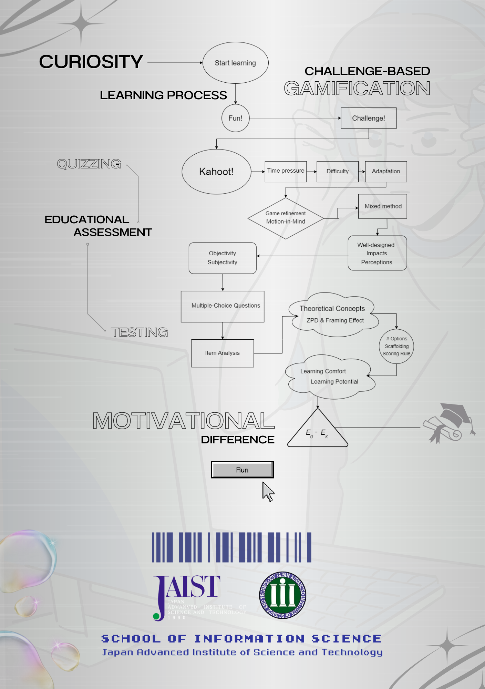

Objectivity and subjectivity in variation of multiple choice questions: Linking the theoretical concepts using motion in mind
Research Fellow · CHILL · AHLab, NUS
Bell Punyawee Anunpattana
ベル・プンヤウィー・アヌンパッタナー · Singapore
AI & Gamification · Educational Technology · Ph.D. JAIST
About
Punyawee Anunpattana
Research Fellow
CHILL · AHLab, NUS Singapore
CPFM — Centre for Project and Facilities Management
Research Fellow
Aug 2023 – Apr 2025
CHILL — Centre for Holistic Inquiry into Lifelong Learning
Research Fellow
May 2025 – present
Making education more engaging and effective through AI, gamification, and human-centered design.
I am a Research Fellow at the Centre for Holistic Inquiry into Lifelong Learning (CHILL), within the Augmented Human Lab, National University of Singapore, where I work on Learning Science and Human-AI Interaction — developing AI-driven adaptive learning systems and gamification strategies for educational contexts. I hold a Ph.D. in Information Science from JAIST, specialising in Entertainment Computing and Game-Based Learning.
My work has been cited 141 times (h-index 6), spanning research on challenge-based gamification, game refinement theory, and adaptive quiz systems. Outside the lab: gaming, film, travel, and good coffee.
Education
B.Eng.
SIIT · Thammasat University
2014 – 2018
M.S.
JAIST
2018 – 2020
Ph.D.
JAIST
2021 – 2023
Doctor of Philosophy
Information Science — Entertainment Computing & Game-Based Learning
Japan Advanced Institute of Science and Technology (JAIST)
Nomi, Ishikawa, Japan · 2021 – 2023
IEICE Excellent Student Award, FY2022


Ph.D. Dissertation
JAIST · School of Information Science
Analyzing Learning Process on Educational Assessment and Its Theoretical Concepts Using Motion in Mind
March 2023
Abstract
Proposes Motion in Mind — a framework connecting challenge-based gamification with multiple-choice question design. By applying game refinement theory to educational assessment, the work reveals how difficulty calibration, time pressure, and framing effects shape motivation and learning outcomes. Validated through studies with Kahoot-based quizzing in real classroom environments.
Curiosity & Motivation
Challenge-Based Gamification
MCQ Assessment Design
Motion in Mind
Learning Outcomes
Master of Science
Information Science
Japan Advanced Institute of Science and Technology (JAIST)
Nomi, Ishikawa, Japan · 2018 – 2020
Bachelor of Engineering
Information and Communication Technology
Sirindhorn International Institute of Technology (SIIT), Thammasat University
Pathum Thani, Thailand · 2014 – 2018
First Class Honours
Experience
Research Fellow
May 2025 – Present
Centre for Holistic Inquiry into Lifelong Learning (CHILL)
National University of Singapore · Full-time · Singapore
Developing AI and LLM-based adaptive learning solutions for Continuing Education & Training (CET) courses, integrating advanced research practices into educational technology.
Research Fellow
Aug 2023 – Apr 2025
Centre for Project and Facilities Management (CPFM)
National University of Singapore · Full-time · Singapore
Led "Improving Adaptive Learning for Professional Upskilling" (funded by SkillsFuture Singapore / WDARF). Built Knowledge Unit Recommender, Adaptive Quiz, and LLM-based Personalised Feedback systems deployed on LMS.
Education Success & Student Ambassador
Aug 2021 – Mar 2023
MathWorks
Contract · Remote (Tokyo, Japan)
Educational training for deep learning and reinforcement learning using MATLAB and Simulink. Organised seminars and webinars at JAIST to share MATLAB knowledge across academic communities.
Visiting Researcher
Apr 2022 – Sep 2022
Dhurakij Pundit University
Internship · Bangkok, Thailand
Research on Gamification Design for Creative Processes; contributed to ongoing projects including COVID-19 game design studies.
Laboratory & Teaching Assistant
May 2018 – Mar 2020
Japan Advanced Institute of Science and Technology (JAIST)
Contract · Nomi, Ishikawa, Japan
Supported research and laboratory activities; Teaching Assistant for the Game Informatics course — student support, exam scoring, and LMS management.
Research
Challenge-Based
Game Refinement
Machine Learning
Player Experience
Personalization
Micro-learning
Engagement
Adaptive Quiz
Human-AI Interaction
Kahoot
Mathematical Models
Knowledge Recommender
Learning Science
Game Informatics
LLM
Adult Education
Game-Based Learning
Continuing Education
Entertainment Value
Lifestyle Integration
Developing adaptive quiz systems and personalised learning experiences that respond to individual learners in real time — combining machine learning with insights from educational psychology to improve outcomes at scale.
Examining how challenge-based gamification mechanics can transform classroom quizzing into engaging, rewarding experiences. Published research demonstrates significant gains in student engagement and knowledge retention.
Applying game refinement theory and signal-processing models to measure and optimise the entertainment value of games — linking player experience to mathematical properties of game structure and design.
Conducting and leading a strategic research-and-translation project — developing an AI-powered lifestyle-integrated micro-learning app for continuing education that meets adult learners in the flow of life and work.
Publications
Capturing potential impact of challenge-based gamification on gamified quizzing in the classroom
User-centered entertainment factors for platform transformation and game development
Analysis of Realm of Valor and its business model on PC and mobile platform comparison
Finding comfortable settings of snake game using game refinement measurement
Personality
Enneagram
Type 3
The Achiever
Driven, ambitious, and deeply adaptable. Goal-oriented and invested in excellence and meaningful impact — motivated by achievement and the desire to inspire others through demonstrated success.
MBTI
ENFJ / INFJ
The Protagonist & The Advocate
Charismatic and empathetic leader with a rich inner world — equally driven by inspiring others and understanding the world on a deeper, principled level. A natural bridge between vision and people.